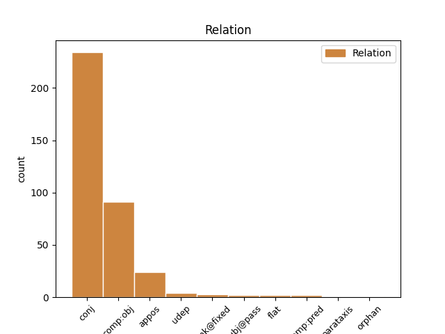
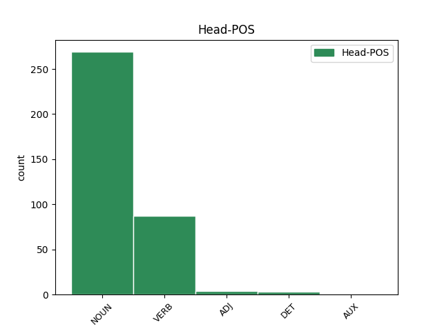
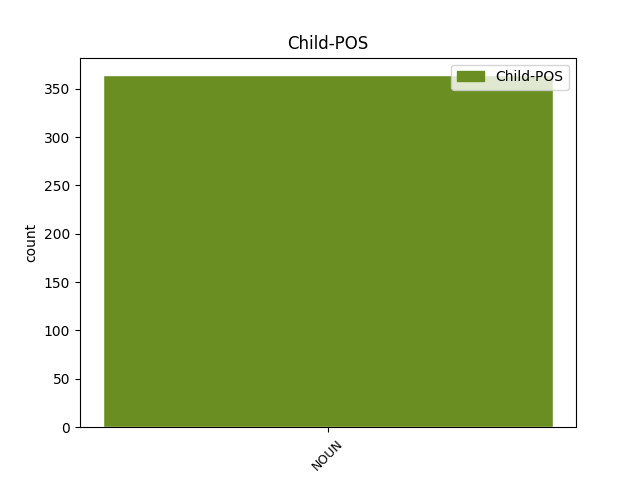

Distribution of features within this leaf



Agreement Rules sorted by frequency.
- When the dependent token is the conjunct(conj) of the head token, and the dependent token is NOUN.
1 Elle _ _ _ _ 0 _ _ _
2 doit _ _ _ _ 0 _ _ _
3 favoriser _ _ _ _ 0 _ _ _
4 la _ _ _ _ 0 _ _ _
5 compréhension _ _ _ _ 0 _ _ _
6 , _ _ _ _ 0 _ _ _
7 la _ _ _ _ 0 _ _ _
8 tolérance tolérance NOUN S Gender=Fem|Number=Sing 0 _ _ _
9 et _ _ _ _ 0 _ _ _
10 l' _ _ _ _ 0 _ _ _
11 amitié amitié NOUN S Gender=Fem|Number=Sing 8 conj _ _
12 entre _ _ _ _ 0 _ _ _
13 toutes _ _ _ _ 0 _ _ _
14 les _ _ _ _ 0 _ _ _
15 nations _ _ _ _ 0 _ _ _
16 et _ _ _ _ 0 _ _ _
17 tous _ _ _ _ 0 _ _ _
18 les _ _ _ _ 0 _ _ _
19 groupes _ _ _ _ 0 _ _ _
20 raciaux _ _ _ _ 0 _ _ _
21 ou _ _ _ _ 0 _ _ _
22 religieux _ _ _ _ 0 _ _ _
23 , _ _ _ _ 0 _ _ _
24 ainsi _ _ _ _ 0 _ _ _
25 que _ _ _ _ 0 _ _ _
26 le _ _ _ _ 0 _ _ _
27 développement _ _ _ _ 0 _ _ _
28 de _ _ _ _ 0 _ _ _
29 les _ _ _ _ 0 _ _ _
30 activités _ _ _ _ 0 _ _ _
31 de _ _ _ _ 0 _ _ _
32 les _ _ _ _ 0 _ _ _
33 Nations _ _ _ _ 0 _ _ _
34 Unies _ _ _ _ 0 _ _ _
35 pour _ _ _ _ 0 _ _ _
36 le _ _ _ _ 0 _ _ _
37 maintien _ _ _ _ 0 _ _ _
38 de _ _ _ _ 0 _ _ _
39 la _ _ _ _ 0 _ _ _
40 paix _ _ _ _ 0 _ _ _
41 . _ _ _ _ 0 _ _ _
1 Imaginez _ _ _ _ 0 _ _ _
2 que _ _ _ _ 0 _ _ _
3 , _ _ _ _ 0 _ _ _
4 quand _ _ _ _ 0 _ _ _
5 nous _ _ _ _ 0 _ _ _
6 sommes _ _ _ _ 0 _ _ _
7 montés _ _ _ _ 0 _ _ _
8 sur _ _ _ _ 0 _ _ _
9 ce _ _ _ _ 0 _ _ _
10 bateau _ _ _ _ 0 _ _ _
11 , _ _ _ _ 0 _ _ _
12 on _ _ _ _ 0 _ _ _
13 nous _ _ _ _ 0 _ _ _
14 ait _ _ _ _ 0 _ _ _
15 tous _ _ _ _ 0 _ _ _
16 donné donner VERB V Gender=Masc|Number=Sing|Tense=Past|VerbForm=Part 0 _ _ _
17 deux _ _ _ _ 0 _ _ _
18 chips chip NOUN S Gender=Masc|Number=Plur 16 comp:obj _ _
19 polystyrène _ _ _ _ 0 _ _ _
20 . _ _ _ _ 0 _ _ _
1 Et _ _ _ _ 0 _ _ _
2 ce _ _ _ _ 0 _ _ _
3 flux flux NOUN S Gender=Masc 0 _ _ _
4 , _ _ _ _ 0 _ _ _
5 le _ _ _ _ 0 _ _ _
6 flux flux NOUN S Gender=Masc 3 appos _ _
7 de _ _ _ _ 0 _ _ _
8 la _ _ _ _ 0 _ _ _
9 vie _ _ _ _ 0 _ _ _
10 , _ _ _ _ 0 _ _ _
11 de _ _ _ _ 0 _ _ _
12 la _ _ _ _ 0 _ _ _
13 base _ _ _ _ 0 _ _ _
14 jusqu' _ _ _ _ 0 _ _ _
15 à _ _ _ _ 0 _ _ _
16 le _ _ _ _ 0 _ _ _
17 sommet _ _ _ _ 0 _ _ _
18 , _ _ _ _ 0 _ _ _
19 est _ _ _ _ 0 _ _ _
20 le _ _ _ _ 0 _ _ _
21 flux _ _ _ _ 0 _ _ _
22 que _ _ _ _ 0 _ _ _
23 voit _ _ _ _ 0 _ _ _
24 l' _ _ _ _ 0 _ _ _
25 écologiste _ _ _ _ 0 _ _ _
26 . _ _ _ _ 0 _ _ _
1 Prendre _ _ _ _ 0 _ _ _
2 en _ _ _ _ 0 _ _ _
3 considération _ _ _ _ 0 _ _ _
4 , _ _ _ _ 0 _ _ _
5 à _ _ _ _ 0 _ _ _
6 le _ _ _ _ 0 _ _ _
7 stade _ _ _ _ 0 _ _ _
8 de _ _ _ _ 0 _ _ _
9 la _ _ _ _ 0 _ _ _
10 conception _ _ _ _ 0 _ _ _
11 , _ _ _ _ 0 _ _ _
12 l' _ _ _ _ 0 _ _ _
13 impact _ _ _ _ 0 _ _ _
14 environnemental _ _ _ _ 0 _ _ _
15 d' _ _ _ _ 0 _ _ _
16 un _ _ _ _ 0 _ _ _
17 produit _ _ _ _ 0 _ _ _
18 tout _ _ _ _ 0 _ _ _
19 à _ _ _ _ 0 _ _ _
20 le le DET RD Definite=Def|Gender=Masc|Number=Sing|PronType=Art 0 _ _ _
21 long long NOUN S Gender=Masc|Number=Sing 20 unk@fixed _ _
22 de _ _ _ _ 0 _ _ _
23 son _ _ _ _ 0 _ _ _
24 cycle _ _ _ _ 0 _ _ _
25 de _ _ _ _ 0 _ _ _
26 vie _ _ _ _ 0 _ _ _
27 pourrait _ _ _ _ 0 _ _ _
28 aisément _ _ _ _ 0 _ _ _
29 faciliter _ _ _ _ 0 _ _ _
30 l' _ _ _ _ 0 _ _ _
31 amélioration _ _ _ _ 0 _ _ _
32 environnementale _ _ _ _ 0 _ _ _
33 avec _ _ _ _ 0 _ _ _
34 un _ _ _ _ 0 _ _ _
35 bon _ _ _ _ 0 _ _ _
36 rapport _ _ _ _ 0 _ _ _
37 coût _ _ _ _ 0 _ _ _
38 / _ _ _ _ 0 _ _ _
39 efficacité _ _ _ _ 0 _ _ _
40 . _ _ _ _ 0 _ _ _
1 Conformément _ _ _ _ 0 _ _ _
2 à _ _ _ _ 0 _ _ _
3 l' _ _ _ _ 0 _ _ _
4 article _ _ _ _ 0 _ _ _
5 13 _ _ _ _ 0 _ _ _
6 de _ _ _ _ 0 _ _ _
7 la _ _ _ _ 0 _ _ _
8 décision _ _ _ _ 0 _ _ _
9 de _ _ _ _ 0 _ _ _
10 le _ _ _ _ 0 _ _ _
11 conseil _ _ _ _ 0 _ _ _
12 de _ _ _ _ 0 _ _ _
13 le _ _ _ _ 0 _ _ _
14 17 _ _ _ _ 0 _ _ _
15 décembre _ _ _ _ 0 _ _ _
16 2001 _ _ _ _ 0 _ _ _
17 établissant _ _ _ _ 0 _ _ _
18 un _ _ _ _ 0 _ _ _
19 programme _ _ _ _ 0 _ _ _
20 d' _ _ _ _ 0 _ _ _
21 action _ _ _ _ 0 _ _ _
22 en _ _ _ _ 0 _ _ _
23 matière _ _ _ _ 0 _ _ _
24 d' _ _ _ _ 0 _ _ _
25 échanges _ _ _ _ 0 _ _ _
26 , _ _ _ _ 0 _ _ _
27 d' _ _ _ _ 0 _ _ _
28 assistance _ _ _ _ 0 _ _ _
29 et _ _ _ _ 0 _ _ _
30 de _ _ _ _ 0 _ _ _
31 formation _ _ _ _ 0 _ _ _
32 , _ _ _ _ 0 _ _ _
33 pour _ _ _ _ 0 _ _ _
34 la _ _ _ _ 0 _ _ _
35 protection _ _ _ _ 0 _ _ _
36 de _ _ _ _ 0 _ _ _
37 l' _ _ _ _ 0 _ _ _
38 euro _ _ _ _ 0 _ _ _
39 contre _ _ _ _ 0 _ _ _
40 le _ _ _ _ 0 _ _ _
41 faux _ _ _ _ 0 _ _ _
42 monnayage _ _ _ _ 0 _ _ _
43 ( _ _ _ _ 0 _ _ _
44 le _ _ _ _ 0 _ _ _
45 programme _ _ _ _ 0 _ _ _
46 « _ _ _ _ 0 _ _ _
47 Pericles _ _ _ _ 0 _ _ _
48 » _ _ _ _ 0 _ _ _
49 ) _ _ _ _ 0 _ _ _
50 , _ _ _ _ 0 _ _ _
51 et _ _ _ _ 0 _ _ _
52 compte compte NOUN S Gender=Masc|Number=Sing 53 subj@pass _ _
53 tenu tenir VERB V Gender=Masc|Number=Sing|Tense=Past|VerbForm=Part 0 _ _ _
54 de _ _ _ _ 0 _ _ _
55 le _ _ _ _ 0 _ _ _
56 rapport _ _ _ _ 0 _ _ _
57 d' _ _ _ _ 0 _ _ _
58 évaluation _ _ _ _ 0 _ _ _
59 Pericles _ _ _ _ 0 _ _ _
60 de _ _ _ _ 0 _ _ _
61 le _ _ _ _ 0 _ _ _
62 30 _ _ _ _ 0 _ _ _
63 novembre _ _ _ _ 0 _ _ _
64 2004 _ _ _ _ 0 _ _ _
65 , _ _ _ _ 0 _ _ _
66 il _ _ _ _ 0 _ _ _
67 est _ _ _ _ 0 _ _ _
68 proposé _ _ _ _ 0 _ _ _
69 de _ _ _ _ 0 _ _ _
70 proroger _ _ _ _ 0 _ _ _
71 et _ _ _ _ 0 _ _ _
72 de _ _ _ _ 0 _ _ _
73 modifier _ _ _ _ 0 _ _ _
74 la _ _ _ _ 0 _ _ _
75 décision _ _ _ _ 0 _ _ _
76 de _ _ _ _ 0 _ _ _
77 le _ _ _ _ 0 _ _ _
78 conseil _ _ _ _ 0 _ _ _
79 . _ _ _ _ 0 _ _ _
1 Je _ _ _ _ 0 _ _ _
2 déclare _ _ _ _ 0 _ _ _
3 reprise _ _ _ _ 0 _ _ _
4 la _ _ _ _ 0 _ _ _
5 session _ _ _ _ 0 _ _ _
6 de _ _ _ _ 0 _ _ _
7 le _ _ _ _ 0 _ _ _
8 Parlement _ _ _ _ 0 _ _ _
9 européen _ _ _ _ 0 _ _ _
10 qui _ _ _ _ 0 _ _ _
11 avait _ _ _ _ 0 _ _ _
12 été _ _ _ _ 0 _ _ _
13 interrompue _ _ _ _ 0 _ _ _
14 le _ _ _ _ 0 _ _ _
15 vendredi vendredi NOUN S Gender=Masc 0 _ _ _
16 17 _ _ _ _ 0 _ _ _
17 décembre décembre NOUN S Gender=Masc|Number=Sing 15 flat _ _
18 dernier _ _ _ _ 0 _ _ _
19 et _ _ _ _ 0 _ _ _
20 je _ _ _ _ 0 _ _ _
21 vous _ _ _ _ 0 _ _ _
22 renouvelle _ _ _ _ 0 _ _ _
23 tous _ _ _ _ 0 _ _ _
24 mes _ _ _ _ 0 _ _ _
25 voeux _ _ _ _ 0 _ _ _
26 en _ _ _ _ 0 _ _ _
27 espérant _ _ _ _ 0 _ _ _
28 que _ _ _ _ 0 _ _ _
29 vous _ _ _ _ 0 _ _ _
30 avez _ _ _ _ 0 _ _ _
31 passé _ _ _ _ 0 _ _ _
32 de _ _ _ _ 0 _ _ _
33 bonnes _ _ _ _ 0 _ _ _
34 vacances _ _ _ _ 0 _ _ _
35 . _ _ _ _ 0 _ _ _
1 sous _ _ _ _ 0 _ _ _
2 prétexte _ _ _ _ 0 _ _ _
3 qu' _ _ _ _ 0 _ _ _
4 il _ _ _ _ 0 _ _ _
5 n' _ _ _ _ 0 _ _ _
6 y _ _ _ _ 0 _ _ _
7 a _ _ _ _ 0 _ _ _
8 pas _ _ _ _ 0 _ _ _
9 de _ _ _ _ 0 _ _ _
10 texte _ _ _ _ 0 _ _ _
11 , _ _ _ _ 0 _ _ _
12 on _ _ _ _ 0 _ _ _
13 refuse _ _ _ _ 0 _ _ _
14 d' _ _ _ _ 0 _ _ _
15 une _ _ _ _ 0 _ _ _
16 part _ _ _ _ 0 _ _ _
17 le _ _ _ _ 0 _ _ _
18 droit _ _ _ _ 0 _ _ _
19 de _ _ _ _ 0 _ _ _
20 le _ _ _ _ 0 _ _ _
21 président _ _ _ _ 0 _ _ _
22 de _ _ _ _ 0 _ _ _
23 la _ _ _ _ 0 _ _ _
24 Commission _ _ _ _ 0 _ _ _
25 à _ _ _ _ 0 _ _ _
26 s' _ _ _ _ 0 _ _ _
27 exprimer _ _ _ _ 0 _ _ _
28 dans _ _ _ _ 0 _ _ _
29 ce _ _ _ _ 0 _ _ _
30 Parlement _ _ _ _ 0 _ _ _
31 et _ _ _ _ 0 _ _ _
32 , _ _ _ _ 0 _ _ _
33 d' _ _ _ _ 0 _ _ _
34 autre _ _ _ _ 0 _ _ _
35 part part NOUN S Gender=Fem|Number=Sing 0 _ _ _
36 , _ _ _ _ 0 _ _ _
37 la _ _ _ _ 0 _ _ _
38 tenue tenue NOUN S Gender=Fem|Number=Sing 35 orphan _ _
39 d' _ _ _ _ 0 _ _ _
40 un _ _ _ _ 0 _ _ _
41 débat _ _ _ _ 0 _ _ _
42 sur _ _ _ _ 0 _ _ _
43 une _ _ _ _ 0 _ _ _
44 réforme _ _ _ _ 0 _ _ _
45 dont _ _ _ _ 0 _ _ _
46 le _ _ _ _ 0 _ _ _
47 Parlement _ _ _ _ 0 _ _ _
48 ne _ _ _ _ 0 _ _ _
49 connaît _ _ _ _ 0 _ _ _
50 pas _ _ _ _ 0 _ _ _
51 les _ _ _ _ 0 _ _ _
52 textes _ _ _ _ 0 _ _ _
53 . _ _ _ _ 0 _ _ _
1 Les _ _ _ _ 0 _ _ _
2 femelles femelle NOUN S Gender=Fem|Number=Plur 0 _ _ _
3 après _ _ _ _ 0 _ _ _
4 avoir _ _ _ _ 0 _ _ _
5 sevré _ _ _ _ 0 _ _ _
6 leur _ _ _ _ 0 _ _ _
7 petit _ _ _ _ 0 _ _ _
8 , _ _ _ _ 0 _ _ _
9 une _ _ _ _ 0 _ _ _
10 quantité quantité NOUN S Gender=Fem|Number=Sing 2 parataxis _ _
11 un _ _ _ _ 0 _ _ _
12 peu _ _ _ _ 0 _ _ _
13 moindre _ _ _ _ 0 _ _ _
14 . _ _ _ _ 0 _ _ _
Disagree Examples:
1 L' _ _ _ _ 0 _ _ _
2 Oeuvre _ _ _ _ 0 _ _ _
3 est _ _ _ _ 0 _ _ _
4 protégée _ _ _ _ 0 _ _ _
5 par _ _ _ _ 0 _ _ _
6 le _ _ _ _ 0 _ _ _
7 droit droit NOUN S Gender=Masc|Number=Sing 0 _ _ _
8 de _ _ _ _ 0 _ _ _
9 la _ _ _ _ 0 _ _ _
10 propriété _ _ _ _ 0 _ _ _
11 littéraire _ _ _ _ 0 _ _ _
12 et _ _ _ _ 0 _ _ _
13 artistique _ _ _ _ 0 _ _ _
14 ( _ _ _ _ 0 _ _ _
15 droit _ _ _ _ 0 _ _ _
16 d' _ _ _ _ 0 _ _ _
17 auteur _ _ _ _ 0 _ _ _
18 , _ _ _ _ 0 _ _ _
19 droits _ _ _ _ 0 _ _ _
20 voisins _ _ _ _ 0 _ _ _
21 , _ _ _ _ 0 _ _ _
22 droits _ _ _ _ 0 _ _ _
23 de _ _ _ _ 0 _ _ _
24 les _ _ _ _ 0 _ _ _
25 producteurs _ _ _ _ 0 _ _ _
26 de _ _ _ _ 0 _ _ _
27 bases _ _ _ _ 0 _ _ _
28 de _ _ _ _ 0 _ _ _
29 données _ _ _ _ 0 _ _ _
30 ) _ _ _ _ 0 _ _ _
31 ou _ _ _ _ 0 _ _ _
32 toute _ _ _ _ 0 _ _ _
33 autre _ _ _ _ 0 _ _ _
34 loi loi NOUN S Gender=Fem|Number=Sing 7 conj _ _
35 applicable _ _ _ _ 0 _ _ _
36 . _ _ _ _ 0 _ _ _
1 Selon _ _ _ _ 0 _ _ _
2 les _ _ _ _ 0 _ _ _
3 termes terme NOUN S Gender=Masc|Number=Plur 0 _ _ _
4 et _ _ _ _ 0 _ _ _
5 les _ _ _ _ 0 _ _ _
6 obligations obligation NOUN S Gender=Fem|Number=Plur 3 conj _ _
7 de _ _ _ _ 0 _ _ _
8 le _ _ _ _ 0 _ _ _
9 présent _ _ _ _ 0 _ _ _
10 contrat _ _ _ _ 0 _ _ _
11 , _ _ _ _ 0 _ _ _
12 la _ _ _ _ 0 _ _ _
13 partie _ _ _ _ 0 _ _ _
14 offrante _ _ _ _ 0 _ _ _
15 propose _ _ _ _ 0 _ _ _
16 à _ _ _ _ 0 _ _ _
17 la _ _ _ _ 0 _ _ _
18 partie _ _ _ _ 0 _ _ _
19 acceptante _ _ _ _ 0 _ _ _
20 l' _ _ _ _ 0 _ _ _
21 exercice _ _ _ _ 0 _ _ _
22 de _ _ _ _ 0 _ _ _
23 certains _ _ _ _ 0 _ _ _
24 droits _ _ _ _ 0 _ _ _
25 présentés _ _ _ _ 0 _ _ _
26 ci-après _ _ _ _ 0 _ _ _
27 , _ _ _ _ 0 _ _ _
28 et _ _ _ _ 0 _ _ _
29 l' _ _ _ _ 0 _ _ _
30 acceptant _ _ _ _ 0 _ _ _
31 en _ _ _ _ 0 _ _ _
32 approuve _ _ _ _ 0 _ _ _
33 les _ _ _ _ 0 _ _ _
34 termes _ _ _ _ 0 _ _ _
35 et _ _ _ _ 0 _ _ _
36 conditions _ _ _ _ 0 _ _ _
37 d' _ _ _ _ 0 _ _ _
38 utilisation _ _ _ _ 0 _ _ _
39 . _ _ _ _ 0 _ _ _
1 Selon _ _ _ _ 0 _ _ _
2 les _ _ _ _ 0 _ _ _
3 termes _ _ _ _ 0 _ _ _
4 et _ _ _ _ 0 _ _ _
5 les _ _ _ _ 0 _ _ _
6 obligations _ _ _ _ 0 _ _ _
7 de _ _ _ _ 0 _ _ _
8 le _ _ _ _ 0 _ _ _
9 présent _ _ _ _ 0 _ _ _
10 contrat _ _ _ _ 0 _ _ _
11 , _ _ _ _ 0 _ _ _
12 la _ _ _ _ 0 _ _ _
13 partie _ _ _ _ 0 _ _ _
14 offrante _ _ _ _ 0 _ _ _
15 propose _ _ _ _ 0 _ _ _
16 à _ _ _ _ 0 _ _ _
17 la _ _ _ _ 0 _ _ _
18 partie _ _ _ _ 0 _ _ _
19 acceptante _ _ _ _ 0 _ _ _
20 l' _ _ _ _ 0 _ _ _
21 exercice _ _ _ _ 0 _ _ _
22 de _ _ _ _ 0 _ _ _
23 certains _ _ _ _ 0 _ _ _
24 droits _ _ _ _ 0 _ _ _
25 présentés _ _ _ _ 0 _ _ _
26 ci-après _ _ _ _ 0 _ _ _
27 , _ _ _ _ 0 _ _ _
28 et _ _ _ _ 0 _ _ _
29 l' _ _ _ _ 0 _ _ _
30 acceptant _ _ _ _ 0 _ _ _
31 en _ _ _ _ 0 _ _ _
32 approuve _ _ _ _ 0 _ _ _
33 les _ _ _ _ 0 _ _ _
34 termes terme NOUN S Gender=Masc|Number=Plur 0 _ _ _
35 et _ _ _ _ 0 _ _ _
36 conditions condition NOUN S Gender=Fem|Number=Plur 34 conj _ _
37 d' _ _ _ _ 0 _ _ _
38 utilisation _ _ _ _ 0 _ _ _
39 . _ _ _ _ 0 _ _ _
1 Paternité paternité NOUN S Gender=Fem|Number=Sing 0 _ _ _
2 - _ _ _ _ 0 _ _ _
3 Pas _ _ _ _ 0 _ _ _
4 d' _ _ _ _ 0 _ _ _
5 utilisation _ _ _ _ 0 _ _ _
6 commerciale _ _ _ _ 0 _ _ _
7 - _ _ _ _ 0 _ _ _
8 Partage partage NOUN S Gender=Masc|Number=Sing 1 flat _ _
9 de _ _ _ _ 0 _ _ _
10 les _ _ _ _ 0 _ _ _
11 conditions _ _ _ _ 0 _ _ _
12 initiales _ _ _ _ 0 _ _ _
13 a _ _ _ _ 0 _ _ _
14 l' _ _ _ _ 0 _ _ _
15 identique _ _ _ _ 0 _ _ _
16 . _ _ _ _ 0 _ _ _
1 Soumis _ _ _ _ 0 _ _ _
2 à _ _ _ _ 0 _ _ _
3 les _ _ _ _ 0 _ _ _
4 termes terme NOUN S Gender=Masc|Number=Plur 0 _ _ _
5 et _ _ _ _ 0 _ _ _
6 conditions condition NOUN S Gender=Fem|Number=Plur 4 conj _ _
7 définis _ _ _ _ 0 _ _ _
8 dans _ _ _ _ 0 _ _ _
9 cette _ _ _ _ 0 _ _ _
10 autorisation _ _ _ _ 0 _ _ _
11 , _ _ _ _ 0 _ _ _
12 et _ _ _ _ 0 _ _ _
13 ceci _ _ _ _ 0 _ _ _
14 pendant _ _ _ _ 0 _ _ _
15 toute _ _ _ _ 0 _ _ _
16 la _ _ _ _ 0 _ _ _
17 durée _ _ _ _ 0 _ _ _
18 de _ _ _ _ 0 _ _ _
19 protection _ _ _ _ 0 _ _ _
20 de _ _ _ _ 0 _ _ _
21 l' _ _ _ _ 0 _ _ _
22 oeuvre _ _ _ _ 0 _ _ _
23 par _ _ _ _ 0 _ _ _
24 le _ _ _ _ 0 _ _ _
25 droit _ _ _ _ 0 _ _ _
26 de _ _ _ _ 0 _ _ _
27 la _ _ _ _ 0 _ _ _
28 propriété _ _ _ _ 0 _ _ _
29 littéraire _ _ _ _ 0 _ _ _
30 et _ _ _ _ 0 _ _ _
31 artistique _ _ _ _ 0 _ _ _
32 ou _ _ _ _ 0 _ _ _
33 le _ _ _ _ 0 _ _ _
34 droit _ _ _ _ 0 _ _ _
35 applicable _ _ _ _ 0 _ _ _
36 , _ _ _ _ 0 _ _ _
37 l' _ _ _ _ 0 _ _ _
38 offrant _ _ _ _ 0 _ _ _
39 accorde _ _ _ _ 0 _ _ _
40 à _ _ _ _ 0 _ _ _
41 l' _ _ _ _ 0 _ _ _
42 acceptant _ _ _ _ 0 _ _ _
43 l' _ _ _ _ 0 _ _ _
44 autorisation _ _ _ _ 0 _ _ _
45 mondiale _ _ _ _ 0 _ _ _
46 d' _ _ _ _ 0 _ _ _
47 exercer _ _ _ _ 0 _ _ _
48 à _ _ _ _ 0 _ _ _
49 titre _ _ _ _ 0 _ _ _
50 gratuit _ _ _ _ 0 _ _ _
51 et _ _ _ _ 0 _ _ _
52 non _ _ _ _ 0 _ _ _
53 exclusif _ _ _ _ 0 _ _ _
54 les _ _ _ _ 0 _ _ _
55 droits _ _ _ _ 0 _ _ _
56 suivants _ _ _ _ 0 _ _ _
57 : _ _ _ _ 0 _ _ _